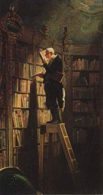

|
|
|
 Der Bücherwurm von Spitzweg |
Bücher
sind oft die besten Freunde.
Bücher sind Türen zu einer neuen
Welt.
gelesene oder zum Lesen vorgemerkte Bücher
Umberto
Eco – Der Friedhof in Prag – Juli 2012 Menschenräuber
– Sabine
Tiesler – Mai 2012 Ich
darf nicht schlafen - S. I. Watson – April 2012 Madame Hemingway – Paula McLain – April 2012 Sterblich
– Thomas
Enger – Februar 2012 Ich
folge deinem Schatten - Mary Higgins Clark – Februar 2012 (nicht
fertig gelesen) Schöne
Bescherung - Das Kleine Buch der Weihnachtskatastrophen - Kim
Fisher Wer
dem Tode geweiht – Elizabeth George - Januar 2012 Angst
–
Robert Harris – Februar 2012 „Feuer“
-
Karen Rose - Dezember 2011 Tote
Augen - Karin Slaughter - Dezember 2011 Marina - Carlos Ruiz Zafón - September 2011" Geheimcode Makaze" - Clive Cussler "21 wirst du nie" - Jean-Luc Seigle - Juli 2011 "Die Frau in Weiß" - Juli 2011 "Michelangelo" - Irving Stone "Spliitter"- Sebastian Fitzek - September 2011 "Erbarmen" - Jussi Adler Olsen - September 2011 "Meineid" - Petra Hammesfahr - August 2011 "Die Macht der Habsburger" - Geoepoche - August 2011 "Napoleon" - Vincent Cronin - Juli 2011 "Roberts Schwester" - Petra Hammesfahr - Juli 2011 "Bélas Sünden" - Petra Hammesfahr - Juli 2011 "Das letzte Opfer" - Petra Hammesfahr -Juli 2011 "Verwesung" - Simon Becket - Juli 2011 "Die Champagner-Diät" - Hera Lind - Juli 2011 "Todesstoss" - Karen Rose - Juli 2011 "Der alte König in seinem Exil" - Arno Geiger - Juli 2011 "Am Anfang war der Tod" - Stefanie Baumm - Juni 2011 SUPER! "Scarpetta Factor" - Patricia Cornwell - Juni 2011 "Der Seele dunkle Pfade" - Irving Stone - April/Mai 2011 "Eiskalte Brandung" - Clive Cussler - März 2011 "Mädchenfänger" - Jilliane Hoffmann - März 2011 "Der Seelenbrecher" - Sebastian Fitzek - Februar 2011 "Ein fast perfekter Plan" - Petra Hammesfahr - Januar 2011 "Das verlorene Symbol" - Dan Brown - Januar 2011 "Hitlers Edeljude" - Brigitte Hamann - Dezember2010/Januar 2011 "Voyeur" - Simon Beckett - Dezember 2010 "Der Augensammler" - Sebastian Fitzek - November 2010 "Denn Niemand hört dein Rufen" - Mary Higgins-Clark - Nov. 2010 "Das andere Kind" - Charlotte Link - November 2010 "Beichte eines Mörders, erzählt in einer Nacht" - Joseph Roth - Nov. 2010 "Hiob" - Joseph Roth - Oktober 2010 "Oh du tödliche" - Christine Sylvester - Oktober 2010 "Muschebubu" - Christine Sylvester - Oktober 2010 "Barocke Engel" - Christine Sylvester - Oktober 2010 "Rage" (Zorn) - Sandra Brown - Oktober 2010 Sigmund Freud - Peter Schneider - Sept/Okt. 2010 "Nebenan lauert der Tod" - Merry Jones - Sept. 2010 "Der Mann mit dem Fagott" - Udo Jürgens/Michaela Moritz - Sept. 2010 "Die Kapuzinergruft" - Joseph Roth - August 2010 "Radetzkymarsch" - Joseph Roth - August 2010 "Das falsche Gewicht" - Joseph Roth - August 2010 "In Todesangst" - Linwood Barclay - August 2010 "Nina Schenk Gräfin von Stauffenberg" - Konstanze von Schulthess - Aug. 10 "Der Teufel von Grimaud" - Frank Bresching - August 2010 "Und Nietzsche weinte" - Irvin D. Yalom - Juli/Aug. 2010 "Obsession" - Simon Beckett - März 2010 "Rettungslos" - Simone van der Vlugt - Februar 2010 "Schatten Schwester" - Simone von der Vlugt - Februar. 2010 "Der verborgene Garten" - Kate Morton - Januar 2010 "Nacht unter Tag" -Val McDermid - Dezember 2009 "Das Kind" - Sebastian Fitzek - Debzember 2009 "Die Bücherdiebin" - Markus Zusak - November 2009 "Dem Tode nah" - Linwood Barclay - November 2009 "Ohne ein Wort" - Linwood Barclay - November 2009 "Die Totengräberin" - Sabine Thiesler - November 2009 "Todesschrei" - Karen Rose - Oktober 2009 (Todesbräute) "Warnschuss" - Sandra Brown - Oktober 2009 "Miss Emily Paxton" - Peter Prange - August 2009 "Ladylike" - Ingrid Noll - September 2009 "Unterm wechselnden Licht" - Eva Strittmatter - August 2009 "Der Turm" - Uwe Tellkamp - Mai 2009 "Blutmale" - Tess Gerritsen - Juni 2009 "Bis(s) zum Ende der Nacht" - Stephenie Meyer - April 2009 "Die Lutherin" - Eva Zeller - März 2009 "Kalte Asche" - Simon Beckett - März 2009 - 2. Hunter "Bis(s) zum Abendrot" - Stephenie Meyer - März 2009 "Die Tulpe des Bösen" - Jörg Kastner - März 2009 "Die Chemie des Todes" - Simon Beckett - März 2009 - 1. Hunter "Bis(s) zur Mittagsstunde" - Stephenie Meyer - Februar 2009 "Bis(s) zum Morgengrauen" - Stephenie Meyer - Februar 2009 "Erinnerung an einen Mörder" - Petra Hammesfahr - Februar 2009 "Doch die Sünde ist scharlachrot" - Elizabeth George - Februar 2009 "Leichenraub" - Tess Gerritsen - Januar 2009 "Bis zum bitteren Ende" - Nicci French - Dezember 2008 "Berufung" - John Grisham - Dezember 2008 "Die Katze" - Joy Fielding - Dezember 2008 "Warte bis du schläfst" Mary Higgins Clark - Dezember 2008 "Bis zum letzten Tag" - Nicholas Sparks - Dezember 2008 "Der Katalane" - Noah Gordon - Dezember 2008 "Die achte Karte" - Kate Mosse Nov. 2008 "Die letzte Spur" - Charlotte Link - Nov. 2008 "Der Chinese" - Henning Mankell - Sept./Okt. 2008 "Der Schatten des Chamäleons" - Minette Walters - September 2008 "Sniper" - Lee Child - September 2008 "Die 4. Frau" - James Patterson - September 2008 "Der buddhistische Mönch" - John Burdett - August 2008 "Der gemalte Kuss" - Elizabeth Hcikey - Juli 2008 "Der Schatten des Chamäleons" - Minette Walters - Juni 2008 "Havana Room" - Colin Harrison - Juni 2008 "Elf Minuten" - Paulo Coelho - Mai 2008 "Die flüsternden Seelen" - Henning Mankell - April 2008 "Nobels Testament" - Liza Marklund - März 2008 "Die italienischen Schuhe" - Henning Mankell - Febr. 2008 "Göttin auf Zeit" - Gerhard Haase-Hindenberg - Febr. 2008 "Der Kunsthändler" - Hans Graf von der Goltz - Januar 2008 "Die Offenbarung" - Robert Schneider - Januar 2008 "Dunkler Jasmin" - David Lambkin - Januar 2008 "Der Zahir" - Paulo Coelho - Januar 2008 "Am Ende war die Tat" - Elizabeth George - Januar 2008 "Das stille Mädchen" - Peter Hoeg - Dezember 2007 "Totenbuch" - Patricia Cornwell - Dezember 2007 "Ghost" -
Robert Harris - Dezember 2007 "Vater Unser" - Jilliane Hoffmann - Dezember 2007 "Tal der Träume " - Patricia Shaw - September 2007 "Ruf des Dschungels" - Sabine Kuegler - September 2007 "Dschungelkind" - Sabine Kuegler - September 2007 "Wilder Oleander" von Kathrin Harvey (Barbara Wood) - Aug. 2007 "Der Gefangene" - John Grisham - August 2007 "Hals über Kopf" - Kathy Reichs - August 2007 "Imperium" - Robert Harris - Juli 2007 "Das Testament des Kardinals" Valeska von Roques - Juli 2007 "Single-Schlussverkauf" Holly Chamberlin - Juli 2007 "Klassentreffen" Simone van der Vlugt - Juli 2007 "Gefrorene Seelen" Giles Blunt - Juni 2007 "Kalter Mond" - Giles Blunt - Mai 2007 "Blutiges Eis" - Giles Blunt - Apirl 2007 "Das Echo der Schuld" - Charlotte Link - April 2007 "Die Ruhe vor dem Sturm" - Helena Brink - April 2007 "Hengstparade" - Gaby Hauptmann - März 2007 "Die Farbe Blau" - Jörg Kastner - März 2007 "Die Romanow Prophezeiung" - Steve Berry - März 2007 "Mit der Liebe einer Löwin" - Christina Hachfeld-Tapukai - März 2007 "Im Bruchteil der Sekunde" - David Baldacci - März 2007 "Unter Mördern" - Roland Garve - Februar 2007 "Ich, Cosima" - Joachim Köhler - Januar 2007 "Lautlos" - Frank Schätzing - Dez./Jan.2007 "Das Bourne Vermächtnis" - Robert Ludlum - Dez. 2006 "Rabenbrut" - Frances Fyfield - Dez. 2006 "Die schöne Schläferin" - Phillip Margolin - Dez. 2006 "Am Anfang sind sie Kinder" - Petra Hammesfahr - Dez. 2006 "Seine große Liebe" - Petra Hammesfahr - Dez. 2006 "Tanz Püppchen, tanz" - Joy Fielding - Dez. 2006 "Des Teufels Werk" - Minette Walters - Nov.-Dez. 2006 "Labyrinth" - Kate Mosse - November 2006 "Mit den Augen eines Kindes" - Petra Hammesfahr - November 2006 "So lange du da bist" - Marc Levy - November 2006 "Wiedersehen in Barsaloi" - Corinne Hofmann November 2006 "Venuswurf" - Tanja Kinkel - Oktober 2006 "Der Fluch des Florentiners" - Rolf Ackermann - September 2006 "Das Geständnis der Mabel Stark" - Robert Hough - September 2006 "Mord braucht Reklame" - Dorothy Sayers - August 2006 "Es geschah im Bellona Club" - Dorothy Sayers - August 2006 "Wo kein Zeuge ist" - Elisabeth George - August 2006 "Bodyfarm" - Patricia Cornwell - Juli 2006 "Die Philosophin" - Peter Prange - August 2006 Patricia Cornwell - August 2006 "Der Balsamträger" - August 2006 "Die Spur des Feuers" - Iris Johansen - Juli 2006 "Die Hüterin der Quelle" - Brigitte Ríebe - Juli 2006 "Bestattungsmuseum Wien" - Juni 2006 "Der Friedhof zu St. Marx" Hans Veigl - Juni 2006 "Gefahr" Ein Win-Garano-Roman - Patricia Cornwell - Juni 2006 "Der Balsamträger" - Wolf Serno - Juni 2006 "Keines natürlichen Todes" Dorothy L. Sayers - Juni 2006 "Starkes Gift" - Dorothy L. Sayers - Juni 2006 "Aufruhr in Oxford" - Dorothy L. Sayers "Die Kameliendame" - Alexandre Dumas - Juni 2006 "Zurück aus Afrika" - Corinne Hofmann - Mai 2006 "Merkels Tochter" - Petra Hammesfahr - Mai 2006 "Crush (Gier)" - Sandra Brown - Mai 2006 "Canossa" - Frederik Berger - April/Mai 2006 "PS - ich liebe dich" - Cecelia Ahern - Mai 2006 "Tödlicher Pfad" - Jon Evans - April 2006 "Der Tristan Betrug" - Robert Ludlum - April 2006 "Der Pathologe" - Jonathan Kellermann - April 2006 "Das Buch der Toten" - Jonathan Kellermann - April 2006 "Monster" - Jonathan Kellermann - April 2006 "Der fremde Gast" - Charlotte Link - März/(April 2006 "Stalingrad - das Drama" - Guido Knopp - März. 2006 "Ein Hauch von Schnee und Asche" - Diana Gabaldon - Febr/März 2006 "Der Nautilus-Plan" - Gayle Lynds - Februar 2006 "Diabolus" - Dan Brown - Februar 2006 "Die Tochter der Himmelsscheibe" - von Wolfgang Hohlbein - Jan. 2006 "Staub" - Patricia Cornwell - Januar 2006 "Die Tatarin" - Iny Lorentz (KHE) "Die Kastellanin" - Iny Lorentz - Dezember 2005 "Die Wanderhure" - Iny Lorentz - Dezember 2005 "Die Gefangenen" - Guido Knopp - September 2005 "Sturm auf Berlin" - Guido Knopp - August 2005 "Anonymus" - Russell Andrews - August 2005 "Das fünfte Paar" - Patricia Cornwell - August 2005 "Die große Flucht" - Guido Knopp - August 2005 "Hitlers Frauen" - Guido Knopp - August 2005 "Bis zur letzten Stunde" - Traudl Junge - August 2005 "Sömmerdas Geschichte in Vergangenheit und Gegenwart" - Aug. 2005 "Echo einer Winternacht" - Val McDermid - Juli 2005 "So wahr mir Gott helfe" - John T. Lescroart - Juli 2005 "Paradies" - Liza Marklund - Juli 2005 "Das Herz des Königs" - Viola Alvarez - Mai 2005 "Der Palast der Himmlischen Freuden" - Adam Williams - mai 2005 "Das Kreidekreuz" - Ulrike Schweikert - Mai 2005 "Stadt des Schweigens" - Erica Spindler - Mai 2005 "Mia - ein Leben im Versteck" von Liza Marklund - April 2005 "Die Liste" von John Grisham - April 2005 "Cupido" von Jilliane Hoffmann - April 2005 "Insel der Rebellen" von Patricia Cornwell - April 2005 "Illuminati" von Dan Brown - März 2005 "Krankheit als Weg" von Thorwald Dethlefsen "Das letzte Geheimnis" von Ian Caldwell + Dustin Thomason - März 2005 "Die Lüge" von Petra Hammesfahr - März 2005 "Ein süßer Sommer" von Petra Hammesfahr - März 2005 "Sakrileg" von Dan Brown - Febr. 2005 "Die Dämonen ruhen nicht" von Patricia Cornwell - Febr. 2005 "Der erste Weltkrieg" von Brigitte Hamann - vorgemerkt "Wer die Wahrheit sucht" von Elizabeth George - Dez.04 /Januar 2005 "Landnahme" von Christoph Hein - Dezember 2004 "Bourdanins Kinder" von Gertrud Fussenegger - November 2004 "Das Haus der dunklen Krüge" von Gertrud Fussenegger - November 2004 "Die Hornisse" - Patricia Cornwell - Oktober/November 2004 "Blinder Passagier" - Patricia Cornwell - Oktober 2004
"Die verlorene Stadt - Cholera in Wien" von
Othmar Birkner - Sept. 2004 "Der Sommermörder" - Nicci French - September 2004 "Das Lied von Langemarck" von Heinz-Joachim Simon - September 2004 "Die Schuld" von John Grisham - Aug/Sept 2004 "Das Pesttuch" von Geraldine Brooks - September 2004 "Ein alter Traum von Liebe" von Nuala O' Faolain - August 2004 "Hitlers Wien" von Brigitte Hamann - August 2004 "Bertha von Suttner" von Brigitte Hamann - August 2004 "Winifred Wagner oder Hitlers Bayreuth" von Brigitte Hamann - Aug. 2004 "Witwe in Wahn" (Alma Mahler-Werfel) von Oliver Hilmers- Sommer 2004 "Mein Leben" von Alma Mahler-Werfel - Sommer 2004 "Rosenrot Mausetot" James Patterson - Sommer 2004 "Und morgen in das kühle Grab" von Mary Higgins Clark - Sommer 2004 "Die Windsbraut" von Helga Hegewisch - Sommer 2004 "Armand der Vampir" von Anne Rice - Sommer 2004 "Meine Handwerks-Burschenzeit 1805-1810" von Christian Wilhelm Bechstedt - Mai/Juli 2004 "Felix Austria" von Stephan Vajda - April 2004 "Elisabeth" von Brigitte Hamann - März 2004 "Die Habsburger" - Februar 2004
Bücher sind Schiffe, welche die
weiten Meere der Zeit durcheilen.
|